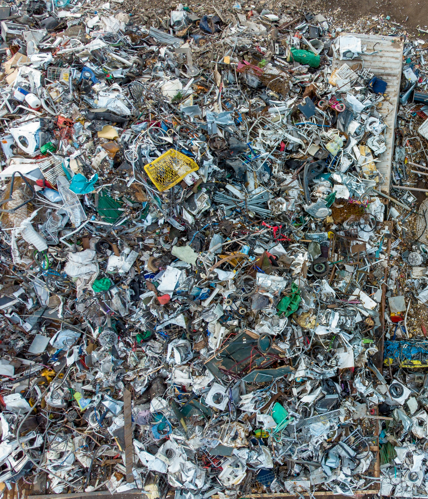
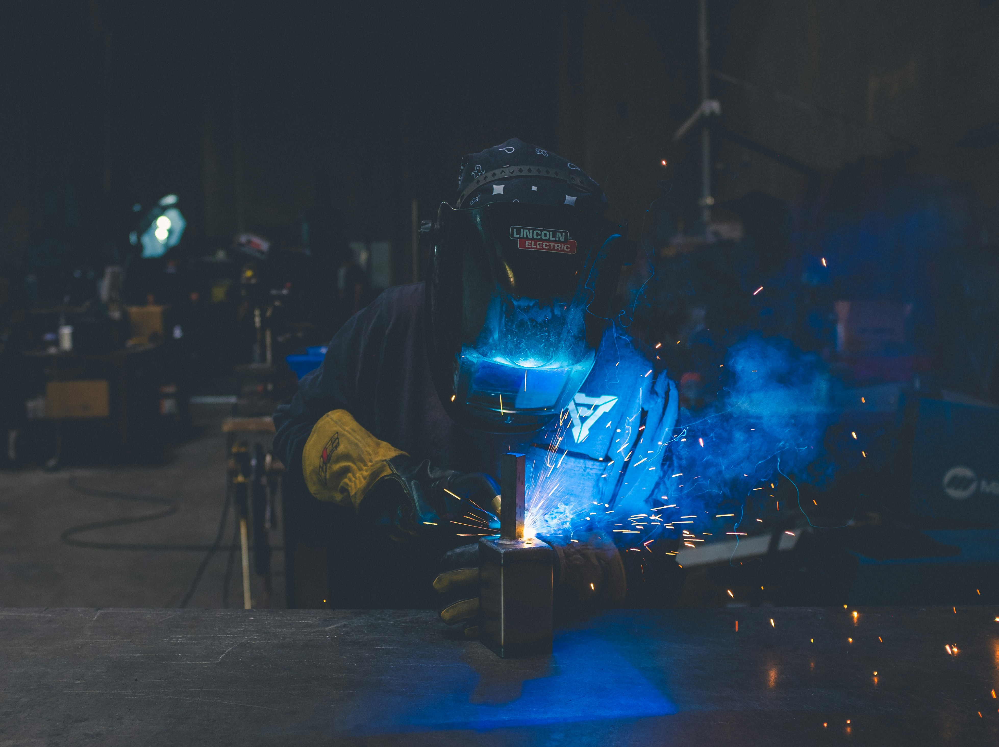

Our Craftsmanship Process
Making luxury sculptures from waste involves three careful stages.
01. Sourcing

We hand-select premium e-waste from industrial centers all over the country essentially in Polokwane because of the amount of waste content,where we look for unique textures and high-quality copper components.
02. Component Refinement

Precision is a necessity. Every selected piece undergoes a thorough cleaning and refinement process, stripping harmful materials and exposing the outer metal for the art transformation.
03. Sculpting & Fusion

Using strict soldering and industrial welding, the components are combined into sculpture-like forms that help connect the gap between technology and art.